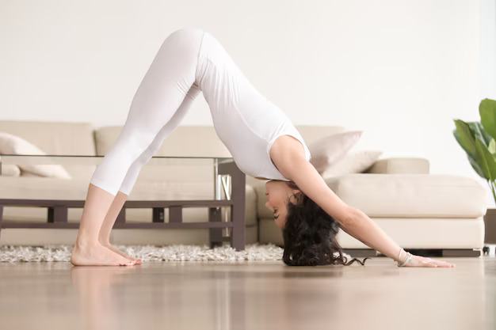

योग तनाव कम करने और विश्राम बढ़ाने के लिए एक प्रभावशाली उपकरण है। कुछ आसन विशेष रूप से मन को शांत करने, तनाव घटाने और गहरी शांति पाने में मदद करते हैं। यहाँ तनाव कम करने और विश्राम के लिए कुछ बेहतरीन योग आसनों का एक विस्तृत मार्गदर्शिका है:
- बालासन

- कैसे:घुटनों के बल बैठें, एड़ियों पर बैठें, आगे की ओर झुकें ताकि माथा चटाई पर लगे, और हाथ सामने की ओर या किनारे पर रखें।
- फ़ायदे: यह मन को शांत करता है, और पीठ और कूल्हों को खींचता है।
- अधो मुख संवासन

- कैसे:हाथों और घुटनों के बल से, कमर को ऊपर और पीछे की ओर उठाएं, और पैरों को सीधा करें।
- फ़ायदे: यह शरीर को खींचता है और पीठ और गर्दन के तनाव को कम करता है।
- उत्तानासन

- कैसे: खड़े होकर, कमर से झुकें, और सिर और हाथों को लटकने दें।
- फ़ायदे: यह पीठ के तनाव को कम करता है और तंत्रिका तंत्र को शांत करता है।
- विपरीतकरणी
- कैसे: पीठ के बल लेटें, पैरों को दीवार के खिलाफ ऊपर की ओर रखें, और हाथों को साइड में रखें।
- फ़ायदे: यह पैरों की सूजन को कम करता है और विश्राम को बढ़ावा देता है।
- मार्जरीआसन-बिटिलासन
- कैसे: हाथों और घुटनों के बल, पीठ को आर्क (गाय) करने और रीढ़ की हड्डी को गोल (बिल्ली) करने के बीच बारी-बारी से करें।
- फ़ायदे:यह रीढ़ की हड्डी को गर्म करता है और पीठ के तनाव को कम करता है।
- पश्चिमोत्तानासन
- कैसे: पैरों को सीधा करके बैठें, और पैरों की ओर झुकें।
- फ़ायदे: यह पीठ और हैमस्ट्रिंग्स को खींचता है और मन को शांत करता है।
- सवासन
- कैसे:पीठ के बल लेटें, पैरों को सीधा रखें, हाथों को साइड में रखें, और सांस पर ध्यान केंद्रित करें।
- फ़ायदे: गहरी विश्राम, योगाभ्यास के लाभों को एकत्र करता है।
- सेतु बंधसार्वांगासन
- कैसे: पीठ के बल लेटें, कमर को उठाएं, और हाथों को पीठ के नीचे जकड़ें।
- फ़ायदे: यह छाती और रीढ़ की हड्डी को खींचता है और तनाव को कम करता है।
- सुप्त बधकसन
- कैसे: पीठ के बल लेटें, पैरों को मिलाकर रखें, और घुटनों को अलग रखें।
- फ़ायदे: यह कमर को खोलता है और विश्राम को बढ़ावा देता है।
- दीर्घ प्राणायाम
- कैसे: बैठें, गहरी सांस लें—पहले पेट में, फिर पसलियों में, और अंत में छाती में; पूरी तरह से सांस छोड़ें।
- फ़ायदे: यह मन को शांत करता है और ऑक्सीजन के प्रवाह को बढ़ाता है।
- प्रभावी अभ्यास के लिए युक्तियाँ:
- स्थिरता: इन आसनों का नियमित अभ्यास करें ताकि लंबे समय तक तनाव में राहत मिल सके।
- साँस ले: गहरी और सजग सांस पर ध्यान केंद्रित करें ताकि विश्राम बढ़ सके और तनाव कम हो सके।
- अनुकूलन: यदि आवश्यक हो, तो अपनी शरीर की स्थिति और आराम के स्तर के अनुसार आसनों को मोडिफाई करने के लिए कंबल, बॉल्स्टर, या ब्लॉक्स जैसे सहायक उपकरण का उपयोग करें।
- सचेतन: हर आसन से आपको कैसा महसूस होता है, इस पर ध्यान दें और आराम और सहजता सुनिश्चित करने के लिए आवश्यकतानुसार समायोजन करें।
इन आसनों को अपनी दिनचर्या में शामिल करने से आप एक अधिक संतुलित और शांत मन की स्थिति प्राप्त कर सकते हैं, जिससे तनाव प्रबंधित करना और विश्राम पाना आसान हो जाएगा।